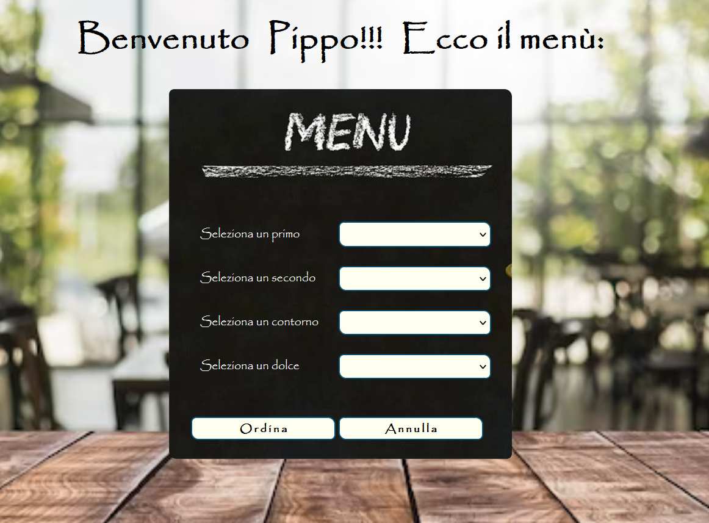
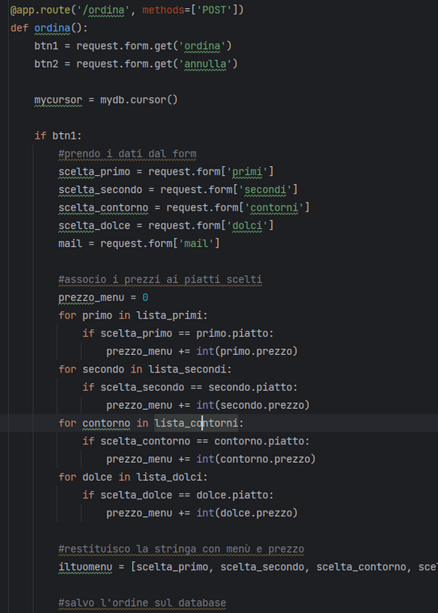
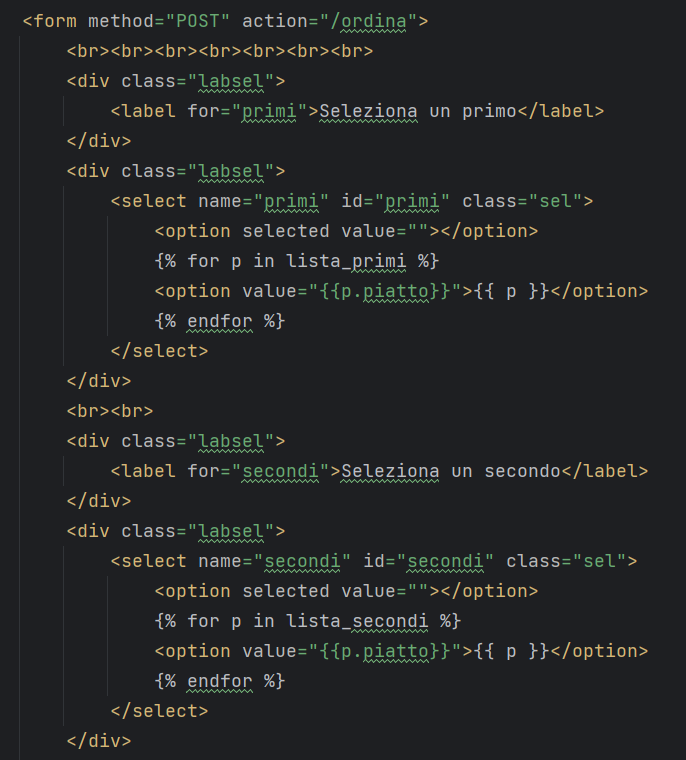
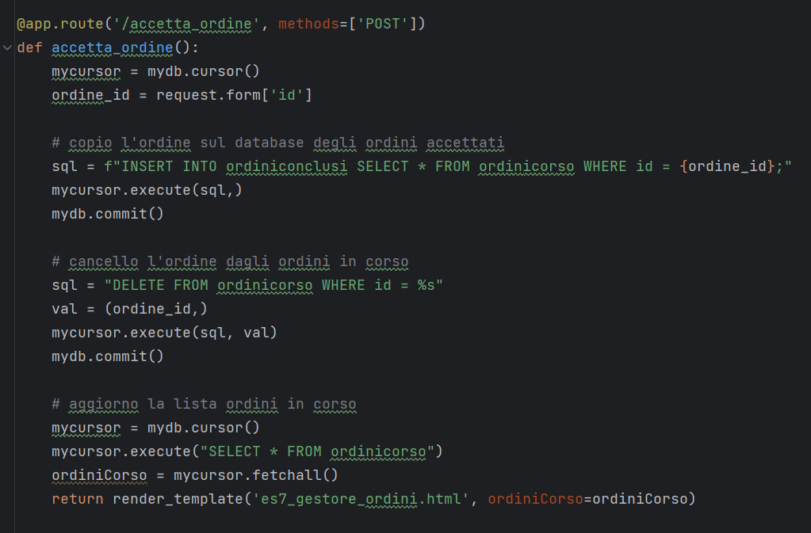
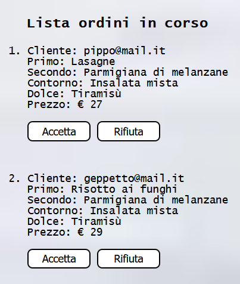
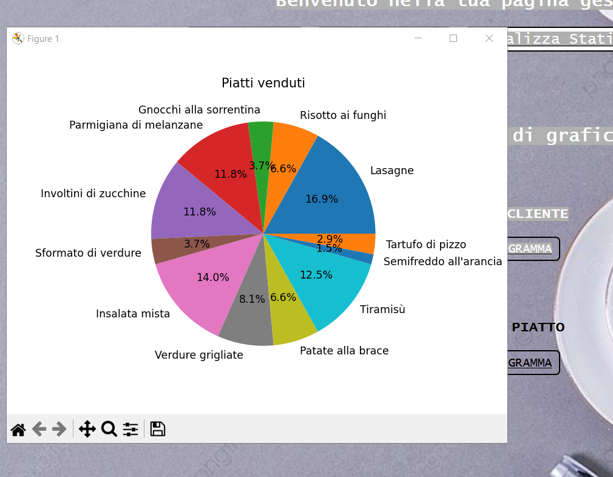

Il progetto gestisce gli ordini di un ristorante ed è suddiviso in sezione cliente e
sezione gestore.
Il cliente, dopo aver effettuato il login o essersi registrato, può comporre
il suo menù tramite una combo selection ed inoltrare l'ordine.

La struttura è basata su classi contenenti piatto e prezzo ed ogni categoria di piatto è stata
associata ad una lista diversa per agevolare la gestione del menù.
Le liste dei piatti sono passate alla pagina HTML che tramite un ciclo for sviluppa l'elenco delle options.
In tal modo si automatizza il processo di aggiornamento della pagina in seguito a variazioni dei menù.


Tutti i dati degli ordini, degli utenti e di sessione vengono gestiti su database MySql.
Il gestore, nella sua area privata, può visualizzare l'elenco degli ordini ricevuti e scegliere se accettarli
o rifiutarli.
Gli ordini rifiutati vengono cancellati dal database degli ordini in corso. Quelli accettati vengono
trasferiti nell'archivio ordini.


Il gestore può inoltre consultare lo storico degli ordini, il totale degli incassi e le
statistiche relative alla spesa per cliente ed ai piatti più venduti.
Per l'elaborazione grafica delle statistiche è stata utilizzata la libreria matplotlib.pyplot.
